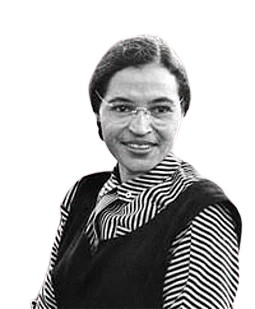

Conheça Alguns dos Destaques
Rosa Parks
Rosa Parks (1913-2005) foi uma ativista do movimento dos direitos civis dos negros nos Estados Unidos. No dia 1 de dezembro de 1955, Rosa entrou para a história por se negar a ceder a um branco o seu assento em um ônibus em Montgomery, no Alabama.
Anne Frank
Breve descrição ou citação